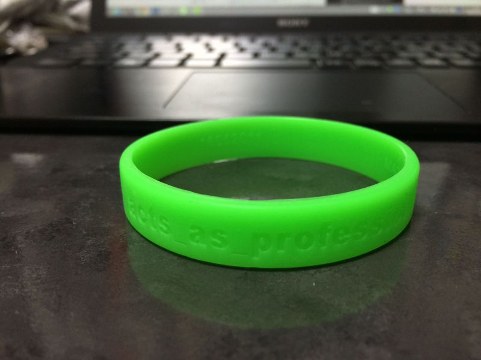

TDDBC 仙台 the 3rd に行ってきました #tddbc

- TDDBC 仙台 the 3rd - TDDBC | Doorkeeper
- TDDBC 仙台 the 3rd #tddbc のまとめ - Togetter
- TDD Boot Camp(TDDBC) - TDDBC仙台03/課題用語集
- TDD Boot Camp(TDDBC) - TDDBC仙台03/課題
行ってきました。当日 TDD で課題を進めた過程は以下を見てもらえればと思います。 https://github.com/toshi-kawanishi/tddbc_sendai_3rd
ひとまず行ってみた感想としては、
- 自分が普段触れない言語でも、同じ課題に対してどのように書くのかというのがみれて本当によかった。
- ペアプロ頭使うので疲れる。1週間で40時間以上働けないというのも納得。
- 今回使わなかったけど PyCharm や IntelliJ、 pytest はやっぱり便利そう。
- 単純に言語、FW、ツールの知識がまだまだ足りないので強化していく。
- 仙台のコミュニティ熱い。遠方のは初めて行ったけど良くしていこうというのは変わらない。
このあとはつらつらと当日の様子を振り返ってみる。
当日の Pythonista 達
Python 組は自分とTAさんを含めて4人いて、2チームで行われました。 その Python 組は以下(自分を除く)。
- @_nishigori さん
- @CortYuming さん
- @tosikawa さん
自分は @tosikawa さんととペアを組ませて頂きました。
当日やったこと
導入(午前)
午前中は以下の2つが行われました。
- @t_wada さんによる基調講演
- Java × JUnit での TDD デモ
これまで TDD のデモの題材は FizzBuzz がお決まりだったようですが、 今回は私達も取り組む課題の一番初めの問題を実際に取り組んでいきました。
これは「TDD ってこんな感じで進めていくんだ」という雰囲気を掴むとともに、 実際に自分たちはこのようなアプローチで進めていくんだ というのがわかりやすくて非常によかったです。
実践(午後)
午後はペアプロ、コードレビューを2回行った後、ふりかえりという流れでした。 自分は Python 2.7.5 × unittest でペアプロに臨みました。理由は以下。
- pytest は最近人気があるが、 unittest ならテストではほぼ使われている。
- python2.7 で unittest がかなり良くなった。
- unittest は Python の標準ライブラリとして導入されている。
しかしお互い Vim派 × Emacs派 だったので、 どのようにペアプロを進めるか考えるうちに以下のように。
- せっかくなので PyCharm を使ってやろうとする。
- しかし PyCharm の設定をどのようにすればわからなくて積む。
- お互いに慣れた環境で試した方がいいだろうとなる。
- github を使ってコードを push → pull 方式で進めようとする。
- 自分がドライバー、 @tosikawa さんがナビゲーター役で進める。
- なんだかんだ最初から最後まで自分がドライバー、 @tosikawa さんがナビゲーター役で進む。
という感じで課題を進めていきました。 当日課題は2まで公開されていましたが、 自分たちは課題1の最後でリファクタリングした段階で終了しました。
実践を終えて
結論から言うと ペアプロするにも、お互いに普段使い慣れている環境使った方がいいよね と思いました。
他のペアでもいらっしゃったようですが、 VCS 管理して push → pull コードを共有し、 でお互い慣れた環境で進めると作業を効率的に進められるなと思いました。
しかし学習コストの問題もありますが、IDEを使っている人たちを見ると、使いこなすと本当に便利そうだなとも思いました。 Python を使っていると PyCharm 便利 という話はよく聞くので、一回覚えたいところです。
それとペアプロで課題に取り組む中で TODO として以下の点が残ったので、 時間を見て取り組んで行きたいです。(課題も追加されたものがまだまだありますしね！)
- 入力値で文字や日付が入ってきた場合どうするか。
- テスト名リファクタリング。
- 1つのテストメソッドにつき、assertを1つにする(どのエラーで失敗したかわかりやすくする)
- contains を in で実装する。
懇談会<
いろいろ話しましたが、うまくまとめられないので、思いついたものをPickup
- 実は Python 組はみな(自分を除く)仕事では ruby も使うというちょっとあれな感じ。
- Capistrano 開発止まっちゃうから、やっぱり Fabric かなというお話。
- 構成管理ツールつながりで Chef、Ansible のお話。
- 「IntelliJ イイよ！」というお話。
- コード書く時はエディタで書いて、他の人が書いたコード読むのにIDEは使う。
- IntelliJ の使い方は Youtube にあるので、それを見て便利さを体感すると良い。
- 設定はデフォルトのものを使い慣れてからいじると良い。
- 他の PyCharm や RubyMine も基本的な設定なんかは一緒だったりするので、IntelliJ を使えれば他も使える。
- その言語専用にと PhpStorm や RubyMine 買ったけど、 IntelliJ があれば問題ない。
- むしろ対応してない言語使う時、SyntaxHighlight が効かず困るので IntelliJ の方がいい。
- ビアバッシュ形式は参加しやすいので非常に良い。
- 前日から募集したにも関わらず、LT飛び入り含め7名も発表してすごい。
- やはり夜行バスは疲れるからやっぱり新幹線で移動したほうがいい。
PyCon APAC 2013 に参加しました #pyconapac #pyconjp
昨年はスタッフでもないのに スライドやリンクをまとめたり してましたが、 今年は PyCon APAC 2013 in Japan - connpass で当日スタッフとして9/14(土)と15(日)の2日間当日スタッフとして受付を担当していました。
発端
2013年の抱負 — kashew_nuts-blog でも述べたのを覚えていて下さったのか、先日参加した Python mini hack-a-thon 夏山合宿 2013 - connpass にて @takanory さんに、 「俺の右腕になってくれないか？(ｷﾘｯ」 と言われました。 それに 「はい。自分で良ければ。」 と二つ返事で引き受け、その場で PyCon APAC 2013 の受付サブリーダーを担当することが決定。
参加当日
1日目、2日目と受付として動いたり、足りなくなったノベルティの補充したり、Party の準備をしたりと “受付” として定められているところ以外のところでも何でもやりました。 こんなこと言うと「スタッフとして参加したなら忙しくてセッションなんて全然聞けないんじゃないか」 と思われるかもしれませんが、 自分の場合しっかりと聞きたいセッションに参加してきました 。 参加したセッションは以下の3つ。
当日スタッフとして申し込む時に、「このセッションは参加したいです！」と伝えていたからでしょうか、 融通してくださって本当にありがたかったです。
本当は3日目の Sprint も参加するつもりだったのですが、 緊張の糸が切れたのか1日中泥のように寝てしまったのでこれだけはもったいなかったですね。 調子に乗って1日目2日目と終わった後Youtubeでセッションの動画を見てしまったりしたのが原因でしょう。 体調管理大事です。
感想とか
「楽しかった」とか「疲れた」とか「ここはうまくできた」とか「俺段取り悪すぎ」とかいろいろ思うところはあったけど、一言でいうと 「あっ」という間だった 。 去年の参加者として参加した時とはまた別の充実感を味わえた気がします。 来年も何らかの形でかかわっていきたいですね。 貴重な経験をさせていただき本当にありがとうございました！
参考リンク・参加者Blog
- PyCon APAC 2013 - PyCon APAC 2013
- PyConAPAC 2013 に行ってきた - 混沌脳内
- PyCon APAC 2013 終わりました - ま、そんな日もあるさ
- ryu22eBlog:PyCon APAC 2013 in Japan にスタッフとして参加しました #pyconapac #pyconjp
- WLX302 PyCon APAC 2013への機材提供 #pyconapac #pyconjp | ヤマハの音とネットワーク製品を語る
- おいぬま日報: PyCon APAC 2013 1日目に行ってきた(1) #pyconapac
- PyCon APAC 2013に行ってきました - ウラガミ・ライフ
Vagrant で共有フォルダが使用できなくなったので解決メモ
以前 Vagrant を1.0.6から1.2.7にUpdateした時に以下のようなエラーがでるようになり、共有フォルダ(/vagrant) が動作しなくなっていました。
メッセージ内容
$ vagrant up
Bringing machine 'default' up with 'virtualbox' provider...
[default] Setting the name of the VM...
[default] Clearing any previously set forwarded ports...
[default] Creating shared folders metadata...
[default] Clearing any previously set network interfaces...
[default] Preparing network interfaces based on configuration...
[default] Forwarding ports...
[default] -- 22 => 2222 (adapter 1)
[default] Booting VM...
[default] Waiting for VM to boot. This can take a few minutes.
[default] VM booted and ready for use!
[default] Configuring and enabling network interfaces...
[default] Mounting shared folders...
[default] -- /vagrant
The following SSH command responded with a non-zero exit status.
Vagrant assumes that this means the command failed!
mount -t vboxsf -o uid=`id -u vagrant`,gid=`id -g vagrant` /vagrant /vagrant
Stdout from the command:
Stderr from the command:
stdin: is not a tty
/sbin/mount.vboxsf: mounting failed with the error: No such device
vagrant-vbguest
原因を調べたら、以下のリンクを発見。
VirtualBox共有フォルダ覚書 | dark_greenの日記 | スラッシュドット・ジャパン
どうやら Guest Additions の Version が古いのが原因らしい。 なので、自動的にGuest Additionsを更新してくれるプラグインを導入。
以下のようにインストール。
$ vagrant plugin install vagrant-vbguest
ここで Vagrantfile に設定を記述しようとしましたが、エラーがでて怒られました。 ~/.vagrant.d/ 以下に Vagrantfile もなかったので、何も設定しないでやってみます。
$ vagrant up
Bringing machine 'default' up with 'virtualbox' provider...
[default] Setting the name of the VM...
[default] Clearing any previously set forwarded ports...
[default] Creating shared folders metadata...
[default] Clearing any previously set network interfaces...
[default] Preparing network interfaces based on configuration...
[default] Forwarding ports...
[default] -- 22 => 2222 (adapter 1)
[default] Booting VM...
[default] Waiting for VM to boot. This can take a few minutes.
[default] VM booted and ready for use!
GuestAdditions versions on your host (4.2.16) and guest (4.2.12) do not match.
Loaded plugins: fastestmirror
Loading mirror speeds from cached hostfile
* base: ftp.iij.ad.jp
* extras: ftp.iij.ad.jp
* updates: ftp.iij.ad.jp
Setting up Install Process
Package kernel-devel-2.6.32-358.14.1.el6.x86_64 already installed and latest version
Package gcc-4.4.7-3.el6.x86_64 already installed and latest version
Package 1:make-3.81-20.el6.x86_64 already installed and latest version
Package 4:perl-5.10.1-131.el6_4.x86_64 already installed and latest version
Nothing to do
Copy iso file /Applications/VirtualBox.app/Contents/MacOS/VBoxGuestAdditions.iso into the box /tmp/VBoxGuestAdditions.iso
Installing Virtualbox Guest Additions 4.2.16 - guest version is 4.2.12
Verifying archive integrity... All good.
Uncompressing VirtualBox 4.2.16 Guest Additions for Linux............
VirtualBox Guest Additions installer
Removing installed version 4.2.12 of VirtualBox Guest Additions...
Copying additional installer modules ...
Installing additional modules ...
Removing existing VirtualBox DKMS kernel modules[ OK ]
Removing existing VirtualBox non-DKMS kernel modules[ OK ]
Building the VirtualBox Guest Additions kernel modules[ OK ]
Doing non-kernel setup of the Guest Additions[ OK ]
You should restart your guest to make sure the new modules are actually used
Installing the Window System drivers[FAILED]
(Could not find the X.Org or XFree86 Window System.)
An error occurred during installation of VirtualBox Guest Additions 4.2.16. Some functionality may not work as intended.
[default] Configuring and enabling network interfaces...
[default] Mounting shared folders...
[default] -- /vagrant
念のため vagrant ssh でログインして確認します。
$ ls /opt/
VBoxGuestAdditions-4.2.16
新しい Version の Guest Additions をインストールできました。
さて本題の共有フォルダが使えるようになっているか確認します。
$ touch /vagrant/test
ログアウトして、プロジェクトにファイルが作成されているか確認します。
$ ls
Vagrantfile test.py
無事共有フォルダが使用できるようになりました。